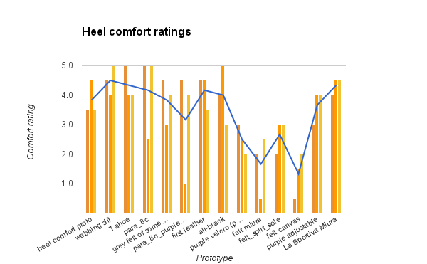
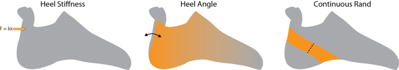

This project is also documented on the SFT Design Blog.
Because everyone's feet are different, from a small pool of customers in our beta program, SFT was able to stretch the design to its limits. The same CAD model used for narrow, "Egyptian-toed" feet could be changed in 2 minutes to fit a person with wide feet and "Morton's toes." The toebox design had proved quite flexible.
However, fitting peoples' heels had been more difficult. After taking measurement after measurement, making visual comparison's of customers' bone structures, and building many prototypes to test various hypotheses, I made progress in determining how much narrower the last should be than one's foot tracing to account for movement of the flesh around the heel. However, each prototype seemed to fit a little differently around the Achilles tendon.
Since this issue was consistent for many customers, there wear clearly some faulty assumptions in the last's heel and ankle design. Since I had built up quite a volume of prototypes, all with different materials, rand designs, and many other facets, I decided to conduct a survey of heel comfort versus all the variables that might affect heel fit.
I selected 13 existing prototypes, 5 of which were adjustable, and one reference off-the-shelf shoe to try on and rate in terms of comfort. Then I collected data on heel angle, rand design, and six other variables and calculated correlation coefficients between these variables and the comfort ratings.

The orange bars indicate comfort ratings (each prototype was sampled three times), and the blue line indicates the average comfort rating.
When calculating correlation coefficients, prototypes with a comfort rating standard deviation of greater than 0.8 (graphically speaking: prototypes where the average rating differs greatly from the three samples) were not included.
The correlation coefficients indicated that heel stiffness was the variable with the greatest effect on heel comfort, followed by heel angle and whether or not the heel rand was continuous. The other variables measured were not significantly correlated to heel comfort.

All of SFT's concurrent shoes have drawn on the information learned from this prototype survey, and our customers noted how much more comfortable the heels were. One customer who received a pair shortly after this said, "The heel fits like a glove and this shoe looks absolutely fantastic."